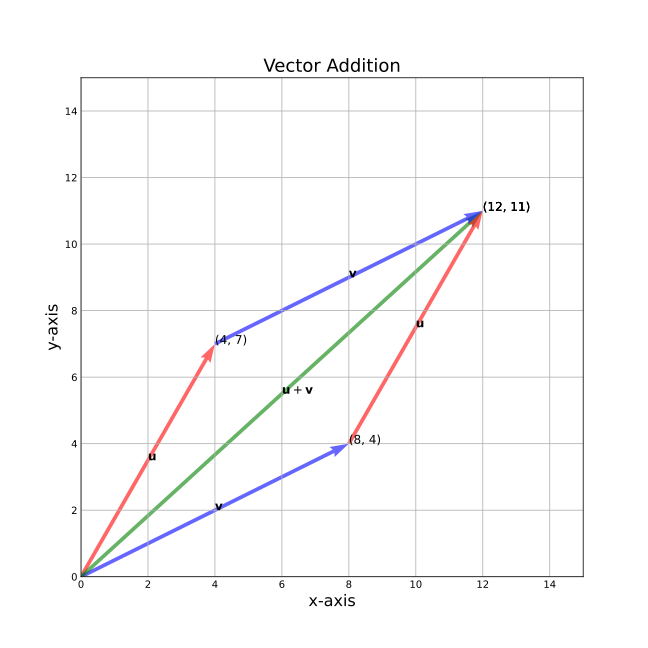
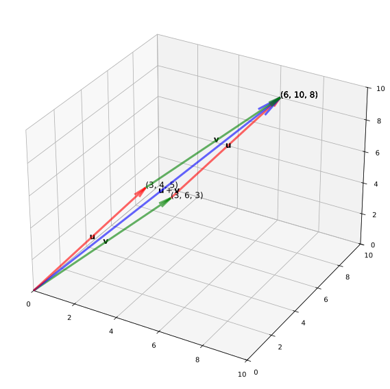
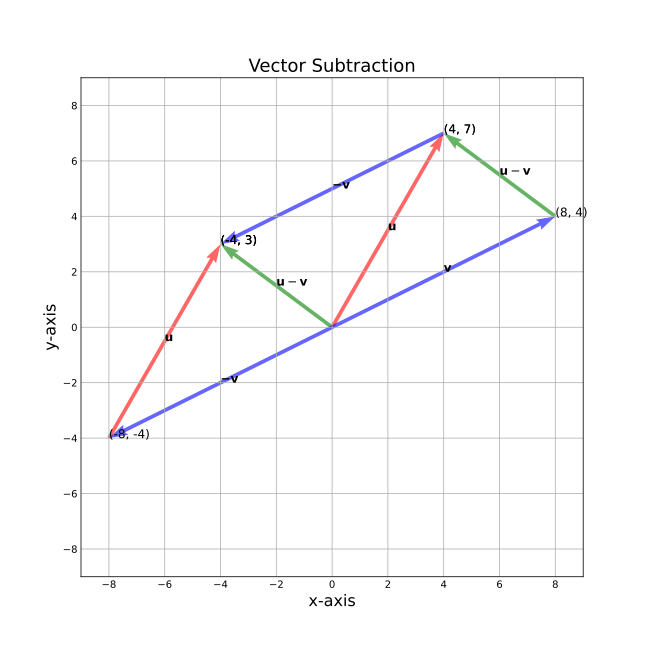
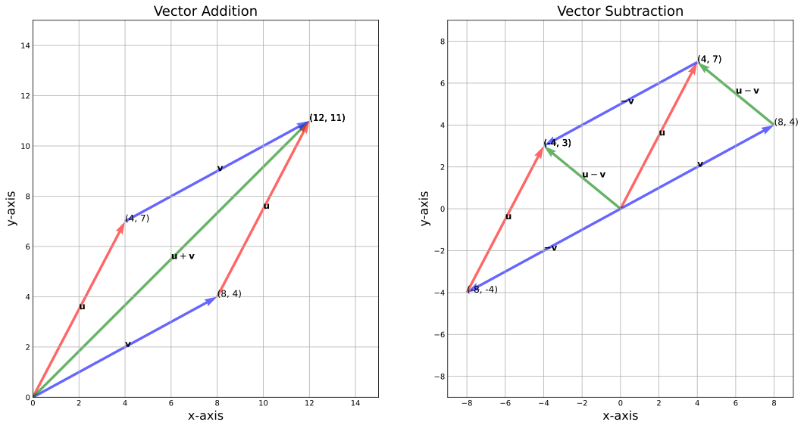
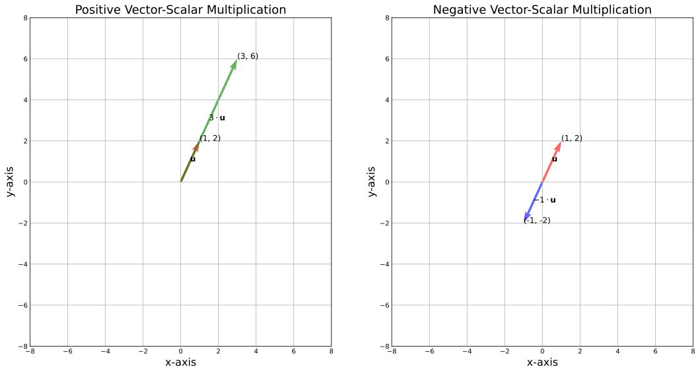

Vector and Its Operations#
Learning Objectives#
Understand Vector Addition and Subtraction: Grasp the concepts of vector addition and subtraction, both algebraically and geometrically, in the \(D\)-dimensional real number space \(\mathbb{R}^D\).
Comprehend Algebraic Definitions: Familiarize with the algebraic definitions of vector addition, subtraction, and scalar-vector multiplication, understanding how these operations are performed component-wise.
Visualize Geometric Interpretation of Vector Operations: Learn to visualize and interpret the geometric implications of vector addition and subtraction, especially in a 2D context for clarity.
Recognize the Vector Addition is Commutative: Acknowledge that vector addition is commutative in nature, implying that the order of addition does not affect the resultant vector.
Explore Scalar-Vector Multiplication: Understand the process and implications of multiplying a vector by a scalar, both in terms of algebraic representation and geometric scaling.
Understand Direction Preservation in Scalar Multiplication: Recognize that scalar multiplication of a vector alters its magnitude but preserves its direction, except in cases of negative scaling where the direction is reversed.
Discover Commutativity in Scalar-Vector Multiplication: Learn about the commutative property of scalar-vector multiplication, which allows the scalar to multiply the vector from either side, resulting in the same outcome.
Vector Addition and Subtraction#
Algebraic Definition#
Definition 204 (Algebraic Definition (Vector Addition and Subtraction))
For any vectors \(\mathbf{u}, \mathbf{v} \in \mathbb{R}^D\), where \(\mathbb{R}^D\) represents the D-dimensional real number space, the operations of vector addition and vector subtraction are defined component-wise as follows:
where \(\mathbf{u} = \begin{bmatrix} u_1 \\ u_2 \\ \vdots \\ u_D \end{bmatrix} \) and \(\mathbf{v} = \begin{bmatrix} v_1 \\ v_2 \\ \vdots \\ v_D \end{bmatrix} \) are column vectors in \(\mathbb{R}^D\). Each component of the resulting vector is the sum (or difference, depending on the operation) of the corresponding components of \(\mathbf{u}\) and \(\mathbf{v}\). Specifically, the \(i\)-th component of the resultant vector \(\mathbf{u} \pm \mathbf{v}\) is given by \(u_d \pm v_d\), for each \(d \in \{1, 2, \ldots, D\}\).
Geometric Interpretation#
In exploring the geometric intuition behind vector addition and subtraction, let’s consider vectors in a D-dimensional space, particularly focusing on 2D for visualization.
Example 61 (Vector Addition)
To add vectors \(\mathbf{u}\) and \(\mathbf{v}\), start by placing both vectors with their tails at the origin as shown in Fig. 69. One approach is to extend vector \(\mathbf{u}\) by moving 8 units right (along the x-axis) and 4 units up (along the y-axis) from the head of \(\mathbf{u}\). This results in \(\mathbf{u} + \mathbf{v} = \begin{bmatrix} 12 \\ 11 \end{bmatrix}\).
Alternatively, apply the head-to-tail method by placing the tail of \(\mathbf{v}\) at the head of \(\mathbf{u}\). The key concept here is that vectors are free entities in space, characterized solely by their direction and magnitude. Hence, translating vector \(\mathbf{v}\) to the head of \(\mathbf{u}\) does not change its essence. The resultant vector from the origin to the new head position of \(\mathbf{v}\) is \(\mathbf{u} + \mathbf{v}\).

Fig. 69 Vector addition; By Hongnan G.#
For the sake of displaying completeness of vector addition in 3D, let’s look at how we can plot it with our code base:
1fig = plt.figure(figsize=(20, 10))
2ax = fig.add_subplot(111, projection="3d")
3
4quiver_kwargs = {
5 "length": 1,
6 "normalize": False,
7 "alpha": 0.6,
8 "arrow_length_ratio": 0.08,
9 "pivot": "tail",
10 "linestyles": "solid",
11 "linewidths": 3,
12}
13
14plotter3d = VectorPlotter3D(
15 fig=fig,
16 ax=ax,
17 ax_kwargs={
18 "set_xlim": {"left": 0, "right": 10},
19 "set_ylim": {"bottom": 0, "top": 10},
20 "set_zlim": {"bottom": 0, "top": 10},
21 },
22 quiver_kwargs=quiver_kwargs,
23)
24vectors = [
25 Vector3D(origin=(0, 0, 0), direction=(3, 4, 5), color="red", label="$\mathbf{u}$"),
26 Vector3D(origin=(0, 0, 0), direction=(3, 6, 3), color="green", label="$\mathbf{v}$"),
27 Vector3D(origin=(0, 0, 0), direction=(6, 10, 8), color="blue", label="$\mathbf{u} + \mathbf{v}$"),
28 Vector3D(origin=(3, 6, 3), direction=(3, 4, 5), color="red", label="$\mathbf{u}$"),
29 Vector3D(origin=(3, 4, 5), direction=(3, 6, 3), color="green", label="$\mathbf{v}$"),
30]
31
32add_vectors_to_plotter(plotter3d, vectors)
33add_text_annotations(plotter3d, vectors)
34plotter3d.plot(show_ticks=True)
<>:25: SyntaxWarning: "\m" is an invalid escape sequence. Such sequences will not work in the future. Did you mean "\\m"? A raw string is also an option.
<>:26: SyntaxWarning: "\m" is an invalid escape sequence. Such sequences will not work in the future. Did you mean "\\m"? A raw string is also an option.
<>:27: SyntaxWarning: "\m" is an invalid escape sequence. Such sequences will not work in the future. Did you mean "\\m"? A raw string is also an option.
<>:28: SyntaxWarning: "\m" is an invalid escape sequence. Such sequences will not work in the future. Did you mean "\\m"? A raw string is also an option.
<>:29: SyntaxWarning: "\m" is an invalid escape sequence. Such sequences will not work in the future. Did you mean "\\m"? A raw string is also an option.
<>:25: SyntaxWarning: "\m" is an invalid escape sequence. Such sequences will not work in the future. Did you mean "\\m"? A raw string is also an option.
<>:26: SyntaxWarning: "\m" is an invalid escape sequence. Such sequences will not work in the future. Did you mean "\\m"? A raw string is also an option.
<>:27: SyntaxWarning: "\m" is an invalid escape sequence. Such sequences will not work in the future. Did you mean "\\m"? A raw string is also an option.
<>:28: SyntaxWarning: "\m" is an invalid escape sequence. Such sequences will not work in the future. Did you mean "\\m"? A raw string is also an option.
<>:29: SyntaxWarning: "\m" is an invalid escape sequence. Such sequences will not work in the future. Did you mean "\\m"? A raw string is also an option.
/tmp/ipykernel_3756/1282120808.py:25: SyntaxWarning: "\m" is an invalid escape sequence. Such sequences will not work in the future. Did you mean "\\m"? A raw string is also an option.
Vector3D(origin=(0, 0, 0), direction=(3, 4, 5), color="red", label="$\mathbf{u}$"),
/tmp/ipykernel_3756/1282120808.py:26: SyntaxWarning: "\m" is an invalid escape sequence. Such sequences will not work in the future. Did you mean "\\m"? A raw string is also an option.
Vector3D(origin=(0, 0, 0), direction=(3, 6, 3), color="green", label="$\mathbf{v}$"),
/tmp/ipykernel_3756/1282120808.py:27: SyntaxWarning: "\m" is an invalid escape sequence. Such sequences will not work in the future. Did you mean "\\m"? A raw string is also an option.
Vector3D(origin=(0, 0, 0), direction=(6, 10, 8), color="blue", label="$\mathbf{u} + \mathbf{v}$"),
/tmp/ipykernel_3756/1282120808.py:28: SyntaxWarning: "\m" is an invalid escape sequence. Such sequences will not work in the future. Did you mean "\\m"? A raw string is also an option.
Vector3D(origin=(3, 6, 3), direction=(3, 4, 5), color="red", label="$\mathbf{u}$"),
/tmp/ipykernel_3756/1282120808.py:29: SyntaxWarning: "\m" is an invalid escape sequence. Such sequences will not work in the future. Did you mean "\\m"? A raw string is also an option.
Vector3D(origin=(3, 4, 5), direction=(3, 6, 3), color="green", label="$\mathbf{v}$"),

Example 62 (Vector Subtraction)
To conceptualize vector subtraction, consider two methods realized by the diagram in Fig. 70.
First Method: Recognize that \(\mathbf{u} - \mathbf{v}\) is equivalent to \(\mathbf{u} + (-\mathbf{v})\). Here, \(-1 \cdot \mathbf{v} = \begin{bmatrix} -8 \\ -4 \end{bmatrix}\). Now, apply vector addition by placing the tail of \(-\mathbf{v}\) at the head of \(\mathbf{u}\). This method corresponds to the diagram’s bottom left side.
Second Method: Keep both vectors in their standard positions (origin as the tail) and draw a vector from the head of \(\mathbf{v}\) to the head of \(\mathbf{u}\). This resultant vector represents \(\mathbf{u} - \mathbf{v}\). It’s not in the standard position, but it geometrically represents the difference.
A noteworthy geometric property is that \(\mathbf{u} - \mathbf{v} = -(\mathbf{v} - \mathbf{u})\). This signifies that geometrically, the vector \(\mathbf{u} - \mathbf{v}\) is the vector \(\mathbf{v} - \mathbf{u}\) rotated by 180 degrees.

Fig. 70 Vector subtraction; By Hongnan G.#
We can also use code to combine them to a subplot:
<>:16: SyntaxWarning: "\m" is an invalid escape sequence. Such sequences will not work in the future. Did you mean "\\m"? A raw string is also an option.
<>:17: SyntaxWarning: "\m" is an invalid escape sequence. Such sequences will not work in the future. Did you mean "\\m"? A raw string is also an option.
<>:18: SyntaxWarning: "\m" is an invalid escape sequence. Such sequences will not work in the future. Did you mean "\\m"? A raw string is also an option.
<>:19: SyntaxWarning: "\m" is an invalid escape sequence. Such sequences will not work in the future. Did you mean "\\m"? A raw string is also an option.
<>:20: SyntaxWarning: "\m" is an invalid escape sequence. Such sequences will not work in the future. Did you mean "\\m"? A raw string is also an option.
<>:41: SyntaxWarning: "\m" is an invalid escape sequence. Such sequences will not work in the future. Did you mean "\\m"? A raw string is also an option.
<>:42: SyntaxWarning: "\m" is an invalid escape sequence. Such sequences will not work in the future. Did you mean "\\m"? A raw string is also an option.
<>:43: SyntaxWarning: "\m" is an invalid escape sequence. Such sequences will not work in the future. Did you mean "\\m"? A raw string is also an option.
<>:44: SyntaxWarning: "\m" is an invalid escape sequence. Such sequences will not work in the future. Did you mean "\\m"? A raw string is also an option.
<>:45: SyntaxWarning: "\m" is an invalid escape sequence. Such sequences will not work in the future. Did you mean "\\m"? A raw string is also an option.
<>:46: SyntaxWarning: "\m" is an invalid escape sequence. Such sequences will not work in the future. Did you mean "\\m"? A raw string is also an option.
<>:47: SyntaxWarning: "\m" is an invalid escape sequence. Such sequences will not work in the future. Did you mean "\\m"? A raw string is also an option.
<>:16: SyntaxWarning: "\m" is an invalid escape sequence. Such sequences will not work in the future. Did you mean "\\m"? A raw string is also an option.
<>:17: SyntaxWarning: "\m" is an invalid escape sequence. Such sequences will not work in the future. Did you mean "\\m"? A raw string is also an option.
<>:18: SyntaxWarning: "\m" is an invalid escape sequence. Such sequences will not work in the future. Did you mean "\\m"? A raw string is also an option.
<>:19: SyntaxWarning: "\m" is an invalid escape sequence. Such sequences will not work in the future. Did you mean "\\m"? A raw string is also an option.
<>:20: SyntaxWarning: "\m" is an invalid escape sequence. Such sequences will not work in the future. Did you mean "\\m"? A raw string is also an option.
<>:41: SyntaxWarning: "\m" is an invalid escape sequence. Such sequences will not work in the future. Did you mean "\\m"? A raw string is also an option.
<>:42: SyntaxWarning: "\m" is an invalid escape sequence. Such sequences will not work in the future. Did you mean "\\m"? A raw string is also an option.
<>:43: SyntaxWarning: "\m" is an invalid escape sequence. Such sequences will not work in the future. Did you mean "\\m"? A raw string is also an option.
<>:44: SyntaxWarning: "\m" is an invalid escape sequence. Such sequences will not work in the future. Did you mean "\\m"? A raw string is also an option.
<>:45: SyntaxWarning: "\m" is an invalid escape sequence. Such sequences will not work in the future. Did you mean "\\m"? A raw string is also an option.
<>:46: SyntaxWarning: "\m" is an invalid escape sequence. Such sequences will not work in the future. Did you mean "\\m"? A raw string is also an option.
<>:47: SyntaxWarning: "\m" is an invalid escape sequence. Such sequences will not work in the future. Did you mean "\\m"? A raw string is also an option.
/tmp/ipykernel_3756/1639481738.py:16: SyntaxWarning: "\m" is an invalid escape sequence. Such sequences will not work in the future. Did you mean "\\m"? A raw string is also an option.
Vector2D(origin=(0, 0), direction=(4, 7), color="r", label="$\mathbf{u}$"),
/tmp/ipykernel_3756/1639481738.py:17: SyntaxWarning: "\m" is an invalid escape sequence. Such sequences will not work in the future. Did you mean "\\m"? A raw string is also an option.
Vector2D(origin=(0, 0), direction=(8, 4), color="b", label="$\mathbf{v}$"),
/tmp/ipykernel_3756/1639481738.py:18: SyntaxWarning: "\m" is an invalid escape sequence. Such sequences will not work in the future. Did you mean "\\m"? A raw string is also an option.
Vector2D(origin=(0, 0), direction=(12, 11), color="g", label="$\mathbf{u} + \mathbf{v}$"),
/tmp/ipykernel_3756/1639481738.py:19: SyntaxWarning: "\m" is an invalid escape sequence. Such sequences will not work in the future. Did you mean "\\m"? A raw string is also an option.
Vector2D(origin=(4, 7), direction=(8, 4), color="b", label="$\mathbf{v}$"),
/tmp/ipykernel_3756/1639481738.py:20: SyntaxWarning: "\m" is an invalid escape sequence. Such sequences will not work in the future. Did you mean "\\m"? A raw string is also an option.
Vector2D(origin=(8, 4), direction=(4, 7), color="r", label="$\mathbf{u}$"),
/tmp/ipykernel_3756/1639481738.py:41: SyntaxWarning: "\m" is an invalid escape sequence. Such sequences will not work in the future. Did you mean "\\m"? A raw string is also an option.
Vector2D(origin=(0, 0), direction=(4, 7), color="r", label="$\mathbf{u}$"),
/tmp/ipykernel_3756/1639481738.py:42: SyntaxWarning: "\m" is an invalid escape sequence. Such sequences will not work in the future. Did you mean "\\m"? A raw string is also an option.
Vector2D(origin=(0, 0), direction=(8, 4), color="b", label="$\mathbf{v}$"),
/tmp/ipykernel_3756/1639481738.py:43: SyntaxWarning: "\m" is an invalid escape sequence. Such sequences will not work in the future. Did you mean "\\m"? A raw string is also an option.
Vector2D(origin=(0, 0), direction=(-4, 3), color="g", label="$\mathbf{u} - \mathbf{v}$"),
/tmp/ipykernel_3756/1639481738.py:44: SyntaxWarning: "\m" is an invalid escape sequence. Such sequences will not work in the future. Did you mean "\\m"? A raw string is also an option.
Vector2D(origin=(-8, -4), direction=(4, 7), color="r", label="$\mathbf{u}$"),
/tmp/ipykernel_3756/1639481738.py:45: SyntaxWarning: "\m" is an invalid escape sequence. Such sequences will not work in the future. Did you mean "\\m"? A raw string is also an option.
Vector2D(origin=(0, 0), direction=(-8, -4), color="b", label="$\mathbf{-v}$"),
/tmp/ipykernel_3756/1639481738.py:46: SyntaxWarning: "\m" is an invalid escape sequence. Such sequences will not work in the future. Did you mean "\\m"? A raw string is also an option.
Vector2D(origin=(4, 7), direction=(-8, -4), color="b", label="$\mathbf{-v}$"),
/tmp/ipykernel_3756/1639481738.py:47: SyntaxWarning: "\m" is an invalid escape sequence. Such sequences will not work in the future. Did you mean "\\m"? A raw string is also an option.
Vector2D(origin=(8, 4), direction=(-4, 3), color="g", label="$\mathbf{u} - \mathbf{v}$"),

Vector Addition is Commutative#
In the realm of linear algebra, before diving into the formal definition of a vector space over a field, it’s insightful to note a fundamental property of vector addition within such a context. Suppose we have a set of vectors \(\mathcal{V}\) defined over a field \(\mathbb{F}\). In this scenario, every vector in \(\mathcal{V}\) exhibits commutative properties in addition, as dictated by the definition of a field in Definition 198.
Concretely, this means that for any two vectors \(\mathbf{u}, \mathbf{v} \in \mathcal{V}\), the operation of vector addition is commutative; that is, \(\mathbf{u} + \mathbf{v} = \mathbf{v} + \mathbf{u}\). This property holds regardless of the dimension \(D\) of the vectors.
Scalar-Vector Multiplication#
Algebraic Definition#
Definition 205 (Algebraic Definition (Scalar-Vector Multiplication))
Given any vector \(\mathbf{v} \in \mathbb{R}^D\) and a scalar \(\lambda \in \mathbb{R}\), the operation of multiplying the vector \(\mathbf{v}\) by the scalar \(\lambda\), denoted as \(\lambda \mathbf{v}\), is defined as:
where \(\mathbf{v}\) is represented as \(\begin{bmatrix} v_1 \\ v_2 \\ \vdots \\ v_D \end{bmatrix}\). This operation is known as Vector-Scalar Multiplication.
Geometrical Definition#
Positive Scaling#
Scaling a vector positively is straightforward. For instance, consider the vector \(\mathbf{u} = \begin{bmatrix} 1 \\ 2 \end{bmatrix}\). When scaled by a positive scalar, say \(\lambda = 3\), the vector becomes:
In this case, the magnitude of \(\mathbf{u}\) increases by a factor of \(3\), while its direction remains unchanged. The resulting vector, \(3\mathbf{u}\), points in the same direction as the original but is three times longer.
Negative Scaling#
Conversely, taking the same vector \(\mathbf{u} = \begin{bmatrix} 1 \\ 2 \end{bmatrix}\) and scaling it by \(\lambda = -1\) yields:
Here, the negatively scaled vector \(-\mathbf{u}\) points in the opposite direction to \(\mathbf{u}\). However, it’s important to note that the “orientation” of \(\mathbf{u}\) in a broader sense remains unchanged; the line along which \(\mathbf{u}\) lies is preserved, and all scalar multiples of \(\mathbf{u}\), regardless of the sign, will lie on this line.
Let’s look how the vector \(\mathbf{u}\) and its scaled versions look like in a 2D space:
<>:21: SyntaxWarning: "\m" is an invalid escape sequence. Such sequences will not work in the future. Did you mean "\\m"? A raw string is also an option.
<>:22: SyntaxWarning: "\c" is an invalid escape sequence. Such sequences will not work in the future. Did you mean "\\c"? A raw string is also an option.
<>:41: SyntaxWarning: "\c" is an invalid escape sequence. Such sequences will not work in the future. Did you mean "\\c"? A raw string is also an option.
<>:21: SyntaxWarning: "\m" is an invalid escape sequence. Such sequences will not work in the future. Did you mean "\\m"? A raw string is also an option.
<>:22: SyntaxWarning: "\c" is an invalid escape sequence. Such sequences will not work in the future. Did you mean "\\c"? A raw string is also an option.
<>:41: SyntaxWarning: "\c" is an invalid escape sequence. Such sequences will not work in the future. Did you mean "\\c"? A raw string is also an option.
/tmp/ipykernel_3756/1726049235.py:21: SyntaxWarning: "\m" is an invalid escape sequence. Such sequences will not work in the future. Did you mean "\\m"? A raw string is also an option.
original_vector = Vector2D(origin=(0, 0), direction=(1, 2), color="r", label="$\mathbf{u}$")
/tmp/ipykernel_3756/1726049235.py:22: SyntaxWarning: "\c" is an invalid escape sequence. Such sequences will not work in the future. Did you mean "\\c"? A raw string is also an option.
scaled_vector = Vector2D(origin=(0, 0), direction=(3, 6), color="g", label="$3 \cdot \mathbf{u}$")
/tmp/ipykernel_3756/1726049235.py:41: SyntaxWarning: "\c" is an invalid escape sequence. Such sequences will not work in the future. Did you mean "\\c"? A raw string is also an option.
negatively_scaled_vector = Vector2D(origin=(0, 0), direction=(-1, -2), color="b", label="$-1 \cdot \mathbf{u}$")

Vector-Scalar Multiplication is Invariant under Rotation#
Vector-scalar multiplication, though conceptually straightforward, plays a fundamental role in various applications within linear algebra, such as in the context of eigendecomposition.
As we have seen in the Definition 205, this operation involves scaling a vector by a scalar factor, which alters the vector’s magnitude without changing its direction (geometrically we can see this too). The result, \(\lambda \mathbf{v}\), is a vector in the same direction as \(\mathbf{v}\) but scaled in magnitude by \(\lambda\). This operation is significant for several reasons:
Preservation of Direction: Unlike many other transformations, vector-scalar multiplication maintains the original direction of the vector, either stretching or compressing it along its existing line of action.
Eigenvectors and Eigenvalues: In the study of eigenvectors and eigenvalues, which are central to eigendecomposition, vector-scalar multiplication illustrates how certain vectors (eigenvectors) change only in magnitude, not direction, when a linear transformation is applied.
Vector-Scalar Multiplication is Commutative#
In linear algebra, the commutative property often associated with scalar operations also applies to vector-scalar multiplication, but with a nuanced understanding. Specifically, for any vector \(\mathbf{v} \in \mathbb{R}^D\) and scalar \(\lambda \in \mathbb{R}\), the operation of multiplying the vector by the scalar exhibits a form of commutativity. This can be expressed as:
Here, \(\lambda \mathbf{v}\) and \(\mathbf{v} \lambda\) are mathematically equivalent, indicating that the scalar can multiply the vector from either the left or the right, yielding the same result. This property is particularly important because it simplifies the manipulation and transformation of vectors in various linear algebra applications, such as in matrix-vector multiplication and transformations.
It’s essential to note that while the scalar multiplication operation is commutative, the multiplication of vectors (if defined, such as in dot or cross products) does not necessarily follow the commutative property. Thus, the commutativity in vector-scalar multiplication is a specific case, pertaining only to the interaction between a scalar and a vector, not between two vectors.
References and Further Readings#
Axler, S. (1997). Linear Algebra Done Right. Springer New York. (Chapter 1.A \(\mathbb{R}^N\) and \(\mathbb{C}^N\)).